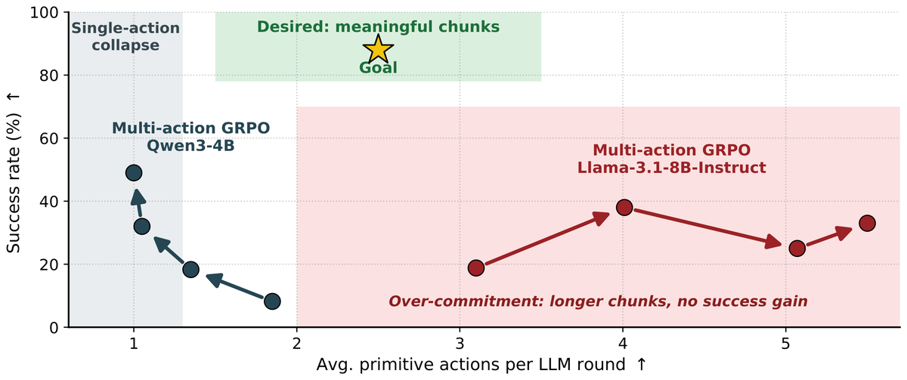

Act More, Decide Less: Skill-Guided Adaptive Action Chunking for Long-Horizon LLM Agents
LLM agents execute variable-length action chunks learned from programmatic skill supervision, improving success rates by 7.0–31.3% on ALFWorld and ScienceWorld while cutting LLM decision rounds by up to 78.9%.